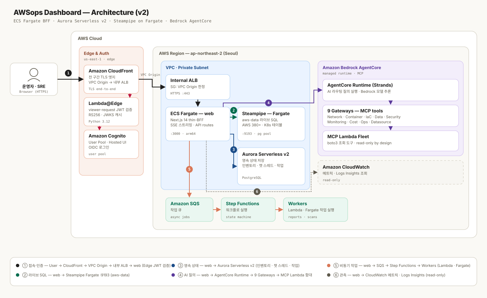

01
실시간 단일 가시성
EC2 · Lambda · EKS · VPC · RDS · MSK … 40개 화면을 라이브 차트와 React Flow 토폴로지로. 멀티 어카운트는 Aggregator로 합쳐 보거나 계정별로 전환합니다.
장애 하나를 쫓다 보면 EC2 · EKS · CloudWatch · Cost Explorer 콘솔을 오가며 초동 시간을 잃습니다. 계정이 여러 개면 부담은 그만큼 배가 됩니다. AWSops는 흩어진 화면을 SQL 기반 단일 대시보드로 모으고, AI가 라이브 데이터를 근거로 먼저 짚어 줍니다.
EC2 · Lambda · EKS · VPC · RDS · MSK … 40개 화면을 라이브 차트와 React Flow 토폴로지로. 멀티 어카운트는 Aggregator로 합쳐 보거나 계정별로 전환합니다.
질문을 11개 핵심 라우트로 분류해 전문 게이트웨이에 전달하고 SSE로 스트리밍합니다. 15개 섹션 종합 진단 리포트(DOCX/MD)와 자동 스케줄링, 대화 이력까지.
Cost Explorer 추이와 컨테이너 단위 비용(Fargate 단가 · EKS OpenCost)을 한 화면에서. CIS 벤치마크는 Powerpipe로 점검해 위반 항목을 추적합니다.
모든 데이터는 Steampipe 내장 PostgreSQL을 지나고, 모든 판단은 라이브 데이터를 근거로 합니다.
EC2 · Lambda · ECS/ECR · EKS · VPC · CloudFront · WAF · EBS · S3 · RDS · DynamoDB · MSK · OpenSearch를 라이브 차트로 봅니다.
40 pages · React Flow 토폴로지질문을 도메인별 라우트로 분류 — 목록·현황은 Steampipe SQL로, 트러블슈팅은 전문 게이트웨이로, 외부 지표는 데이터소스로 보냅니다.
SSE 스트리밍 · Code InterpreterSteampipe Aggregator로 여러 계정을 통합 조회하고, ReadOnlyAccess 기반 assume-role로 연결합니다. 계정 추가는 설정 파일 등록뿐, 코드 수정이 없습니다.
config.json · AggregatorPowerpipe 벤치마크로 CIS 컨트롤을 주기 점검하고, 위반 리소스를 계정·서비스별로 드릴다운합니다.
Powerpipe benchmarkCost Explorer, ECS 컨테이너 비용(Container Insights + Fargate 단가), EKS 비용(OpenCost)까지 서비스별 드릴다운.
Cost Explorer · OpenCostPrometheus · Loki · Tempo · ClickHouse · Jaeger · Dynatrace · Datadog을 연동하고, AI가 쿼리(PromQL·LogQL…)를 대신 작성합니다.
SSRF 방지 allowlist비용 · 보안 · 네트워크 · 컴퓨팅 · DB까지 15개 섹션을 Bedrock이 분석해 DOCX/MD로 내보냅니다. 주간·격주·월간 자동 실행과 SNS 메일 알림.
15 sections · 자동 스케줄EKS kubeconfig 등록만으로 노드 · 파드 · 디플로이 · 서비스를 조회합니다. K8s 60+ 테이블을 같은 SQL로.
AdminViewPolicy · 60+ tables대시보드와 가이드 문서 모두 한국어 · 영어 · 중국어(간체)를 지원합니다. 언어 설정은 브라우저에 저장됩니다.
ko · en · zh네이비 다크 테마 위에 라이브 차트와 토폴로지, AI 진단이 한 흐름으로 이어집니다.


하나의 AgentCore Runtime(Strands) 위에서 8개 게이트웨이가 125개 MCP 도구로 라이브 AWS를 조회합니다. 도구는 조회 목적으로 설계되었습니다.
| 게이트웨이 | 대표 역량 | 도구 |
|---|---|---|
| Network | VPC · TGW · VPN · Reachability Analyzer · Flow Logs · Network Firewall | 17 |
| Container | EKS 클러스터/노드/파드 · ECS 서비스/태스크 · Istio 트러블슈팅 | 24 |
| IaC | CDK · CloudFormation · Terraform | 12 |
| Data | DynamoDB · RDS · ElastiCache · MSK | 24 |
| Security | IAM 사용자/역할/정책 · 정책 시뮬레이션 | 14 |
| Monitoring | CloudWatch 지표/알람 · Log Insights · CloudTrail | 16 |
| Cost | Cost Explorer · Pricing · Budgets · 예측 | 9 |
| Ops | AWS 문서 · Steampipe SQL · 일반 운영 질의 | 9 |
CloudFront 엣지에서 Lambda@Edge가 Cognito JWT를 검증하고, ALB를 거쳐 프라이빗 서브넷의 EC2 한 대가 Next.js와 Steampipe를 함께 실행합니다. AI는 Bedrock AgentCore가 관리형으로 담당합니다.

모바일에서는 가로 다이어그램을 세로로 회전해 보여드립니다.
AWSops는 관측에 집중하는 운영 대시보드입니다. AI 도구는 조회 목적으로 설계되었고, 교차 계정 연결은 ReadOnlyAccess 기반 역할을 사용합니다 — 인프라 변경은 운영자의 IaC에 남겨둡니다.
EC2는 프라이빗 서브넷에 있고, ALB 보안 그룹은 CloudFront 관리형 prefix list로만 열립니다. 접속은 SSM Session Manager로.
Cognito User Pool + Lambda@Edge가 CloudFront에서 JWT를 검증합니다. 미인증 요청은 오리진에 도달하지 못합니다.
19개 Lambda 도구는 조회 목적으로 설계되었고, 교차 계정은 ReadOnlyAccess 기반 assume-role, 앱 내 EKS 온보딩은 AmazonEKSAdminViewPolicy(view) 기반입니다.
7종 외부 데이터소스는 SSRF 방지 검증과 allowlist를 통과한 엔드포인트만 호출합니다.
설치부터 멀티 어카운트 연결, AgentCore 구성까지 — 단계별 가이드 문서를 따라가면 됩니다. 배포는 CDK와 스크립트로 자동화되어 있습니다.